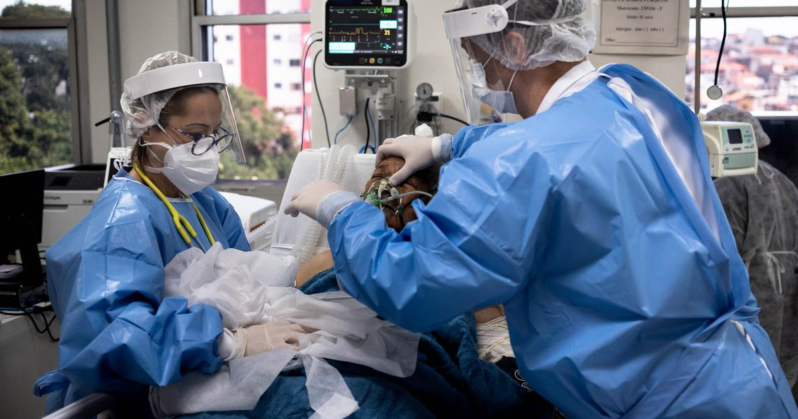

Best Country To Study Nursing Abroad
Best Country to Study Nursing Abroad in 2026: A Guide for Indian Nurses
Compare the UK, USA, Canada, Australia, New Zealand, and Germany for Indian nurses in 2026: verified pay, licensing routes, timelines, and which country fits your profile.
There is no single best country to study nursing abroad. There is a best country for you. It depends on your qualification, your English or German level, your budget, and how you handle high-stakes exams.
Most rankings sort countries by salary alone. That misses the part that decides how fast you start earning: the licensing route. This guide compares six destinations on verified 2025-2026 data. You will see what each country pays, how registration works for Indian-trained nurses, and which profile each country suits best.
Key Takeaways
- The USA pays the most, with a median registered nurse wage of $97,550 in May 2025 (BLS). It also has the hardest first exam for international nurses.
- Canada offers the clearest permanent residency path. Healthcare-category Express Entry draws invited candidates at CRS scores of 467-475 between February and June 2026 (IRCC).
- New Zealand depends heavily on overseas nurses. Of 16,473 nurses added to its register in the year to March 2025, 14,303 trained abroad (Nursing Council of New Zealand).
- Germany suits nurses willing to learn German to B2. A recognition partnership lets you enter with A2 German and work while your recognition finishes (Make it in Germany).
- The UK is still possible but tighter. Indian nurses joining the NMC register fell from 9,249 to 4,215 in the year to March 2026 (NMC).
In this article:
- How We Compared the Six Countries
- Quick Comparison: The Best Country for Each Nursing Profile
- USA: Best for the Highest Salary
- Canada: Best for Permanent Residency
- Australia: Best for High Pay With a Clear Structure
- New Zealand: Best for Overseas-Friendly Registration
- Germany: Best for Low Tuition and High Demand
- UK: Still an Option, But Plan Carefully
- Which Country Is Best for You? Match Your Profile
- Frequently Asked Questions
- Conclusion
How We Compared the Six Countries
We scored each destination on four questions that matter to an Indian nurse. Salary is only one of them.
- Pay: What does a registered nurse actually earn, from an official source?
- Licensing route: Which exam or assessment stands between your Indian degree and a nursing licence?
- Speed to practice: How long does registration usually take?
- Long-term settlement: Is there a realistic route to permanent residency?
All salary figures below come from government or regulator sources. They are in local currency and before tax. Living costs differ a lot between countries, so compare take-home lifestyle, not just the headline number.
Quick Comparison: The Best Country for Each Nursing Profile
If you only read one section, read this one. Each country wins for a different kind of nurse.
| Country | Best for | Official pay benchmark | Licensing route for Indian nurses |
|---|---|---|---|
| USA | Highest salary ceiling | Median $97,550 a year (May 2025) | NCLEX-RN plus state board approval |
| Canada | Permanent residency | Median CAD 43.27 an hour | NNAS report, then provincial regulator (NCLEX-RN in Ontario) |
| Australia | High pay with a structured exam | Median AUD 2,192 a week, full-time | Outcomes-based assessment: MCQ exam, then OSCE |
| New Zealand | Welcoming to overseas nurses | NZD 75,773 a year at graduate step | Nursing Council competence assessment |
| Germany | Low tuition, strong job demand | EUR 3,510-4,305 a month (public scale) | Recognition plus B2 German |
| UK | Fixed, transparent NHS pay | GBP 32,073-39,043 a year (Band 5) | NMC: English test, CBT, and OSCE |
Now let's look at each country in detail.
USA: Best for the Highest Salary

Photo: "Covid-19 SP - UTI V. Nova Cachoeirinha" by Gustavo Basso, CC BY-SA, via Wikimedia Commons.
The USA pays registered nurses more than any other country on this list. The median annual wage was $97,550 in May 2025. Employment is projected to grow 6% from 2025 to 2035, with about 180,800 openings each year (U.S. Bureau of Labor Statistics).
The catch is the NCLEX-RN exam. In 2025, internationally educated first-time candidates passed at 47.3%. US-educated first-time candidates passed at 86.7% (NCSBN). The exam tests US clinical judgement, delegation rules, and scope of practice, not just nursing knowledge.
Choose the USA if you perform well under exam pressure. Plan for focused NCLEX-RN preparation before you apply, not after you land.
Canada: Best for Permanent Residency
Canada is the strongest choice if settling permanently matters most to you. Its Express Entry system runs special draws for healthcare workers. Between February and June 2026, these draws invited candidates at CRS scores between 467 and 475 (IRCC; CIC News).
Pay is solid too. Canada's Job Bank lists a national median of CAD 43.27 an hour for registered nurses (Job Bank). Remote territories pay more.
Licensing starts with the National Nursing Assessment Service (NNAS). NNAS checks your documents and compares your education to Canadian standards. It then sends an Advisory Report to the province you choose. Most applicants finish NNAS in about a year, mostly waiting for documents (NNAS Applicant Handbook). After that, each province sets its own rules. Ontario, for example, requires the NCLEX-RN (College of Nurses of Ontario).
Start collecting your college transcripts and employer letters early. That paperwork is where most Canadian timelines slip.
Australia: Best for High Pay With a Clear Structure
Australia pays well. Full-time registered nurses earned a median of AUD 2,192 a week before tax, based on ABS data from May 2025 (Jobs and Skills Australia). That works out to over AUD 110,000 a year.
Here is the part most guides skip. In 2025, Australia opened a fast registration pathway for nurses from certain countries. These are the UK, Ireland, the USA, Singapore, Spain, and the Canadian provinces of British Columbia and Ontario. Eligible nurses need 1,800 hours of practice there, and registration takes about 1-6 months instead of 9-12 (Ahpra).
India is not on that list. So Indian-trained nurses usually go through the outcomes-based assessment instead, unless they are asked to upgrade their qualification first. You first pass a multiple-choice exam, then a practical OSCE held in Adelaide or Melbourne (Ahpra).
That creates a smart two-step option. Some nurses register in the UK or USA first, build 1,800 hours, then move to Australia on the faster pathway. It takes longer overall, but it skips the OSCE and adds international experience to your CV.
New Zealand: Best for Overseas-Friendly Registration
New Zealand relies heavily on overseas nurses. In the year to March 2025, 16,473 registered nurses joined its register. Of those, 14,303 were internationally qualified and only 2,170 were New Zealand graduates (Nursing Council of New Zealand, Annual Report 2025).
Pay starts lower than Australia. Health New Zealand's 2025 scale lists a graduate registered nurse at NZD 75,773 a year, rising to NZD 106,739 at the top step (Health New Zealand). Pay talks were still ongoing in 2026, so check the latest rates before you decide.
The Council now uses a standardised competence assessment for overseas nurses. Choose New Zealand if you want a welcoming system and a calmer pace of life, and you accept a lower starting salary.
Germany: Best for Low Tuition and High Demand
Photo: "Surgeon Scrubs" by Matthew Henry, CC0, via StockSnap.
Germany works differently from the English-speaking countries. Language is the main hurdle, not an exam. To use the protected nursing title, you need German at B2 level (Anerkennung in Deutschland).
There is a helpful shortcut. Under a recognition partnership, you can enter Germany with A2 German and an employer agreement. You then work as a nursing assistant while your recognition finishes (Make it in Germany). Your Indian qualification must be at least two years of training and recognised in India.
Pay in public hospitals follows a fixed scale. A qualified nurse at pay group P7 earns EUR 3,510-4,305 a month before tax, from May 2026 (Klinikum Braunschweig, TVöD pay table).
Choose Germany if you are ready to commit serious time to learning German. The language is the gate, so start classes before you apply.
UK: Still an Option, But Plan Carefully
The UK was the top choice for Indian nurses for years. That has changed. Indian nurses joining the NMC register fell 54.4%, from 9,249 to 4,215, in the year to March 2026 (NMC). Visa rule changes drove most of the drop.
The route itself is clear. You need an English score (IELTS or OET), then the NMC Test of Competence: a computer-based test and an OSCE. NHS pay is fully public. A Band 5 nurse earns GBP 32,073-39,043 a year from April 2026 (NHS Employers).
If the UK was your default, keep it on the list. Just compare it against Canada and Australia before you commit.
Which Country Is Best for You? Match Your Profile
Think about two nurses with the same BSc Nursing degree. One is strong at long, steady coursework but freezes in single high-stakes exams. The other does best under exam pressure but hates slow paperwork. They should not pick the same country.
Use these patterns as a starting point:
- You want the highest salary and you are good at exams: the USA, with serious NCLEX-RN preparation.
- You want permanent residency above all: Canada, starting your NNAS paperwork early.
- You want strong pay and a structured, predictable process: Australia, through the outcomes-based assessment.
- You want a welcoming system and can accept a lower starting salary: New Zealand.
- You want low tuition and can learn a new language: Germany, aiming for B2 German.
- You already have UK or US experience: Australia's faster pathway may skip the OSCE entirely.
Costs and scholarships also differ by country. Here is the destination data Jusst Nursing uses with students:
| Country | Intakes | Scholarships | Avg. annual cost |
|---|---|---|---|
| UK | Jan, Sep | Up to GBP 15,000 | GBP 22,000-35,000 |
| New Zealand | Feb, Jul | Up to NZD 20,000 | NZD 27,000-36,000 |
| Canada | Jan, May, Sep | Up to CAD 25,000 | CAD 25,000-38,000 |
| Australia | Feb, Jul, Nov | Up to AUD 30,000 | AUD 28,000-40,000 |
| USA | Jan, Aug | Up to USD 40,000 | USD 35,000-55,000 |
| Germany | Mar, Sep | Up to EUR 10,000 | Low or no tuition at public universities |
Frequently Asked Questions
Which is the best country to study nursing abroad for Indian students?
It depends on your goal. The USA pays the most, Canada offers the clearest permanent residency route, and Germany has the lowest tuition. New Zealand registers more overseas nurses than local graduates. Match the country to your exam strengths, language skills, and budget.
Which country is easiest for Indian nurses to get registered in?
No route is truly easy, but they test different things. Canada and New Zealand focus on document checks and competence assessment. The USA and UK rely on exams like the NCLEX-RN or NMC Test of Competence. Germany mainly tests your German language level.
Can a GNM diploma holder study nursing abroad?
Yes, in many cases. Germany's recognition partnership accepts qualifications of at least two years of training. Other countries may ask GNM holders to complete a bridging course or extra study first. A profile assessment before you apply saves time and money.
Which country pays nurses the most?
The USA, with a median registered nurse wage of $97,550 in May 2025. Australia also pays strongly, with full-time nurses earning a median of AUD 2,192 a week. Always compare pay against local living costs, not just exchange rates.
Conclusion
The best country to study nursing abroad is the one whose licensing route fits your strengths. Salary matters, but the exam or assessment decides how quickly you start earning it.
To recap: pick the USA for pay, Canada for permanent residency, Australia for structure, and New Zealand for a welcoming system. Pick Germany for low tuition, and the UK if you plan carefully. Whatever you choose, start your licensing preparation on day one, not after admission.
You can explore each destination's courses, intakes, and requirements on Jusst Nursing's study abroad destinations.
This guide uses official government, regulator, and employer data. Every statistic links to its original source, retrieved on 13 October 2026.